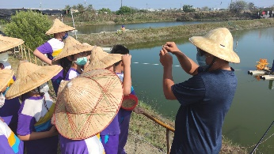
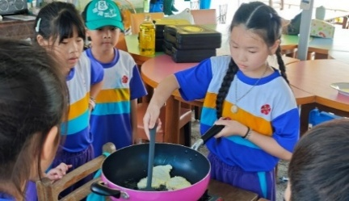
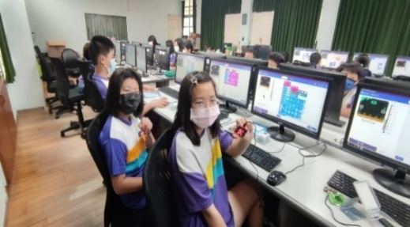
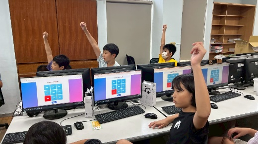
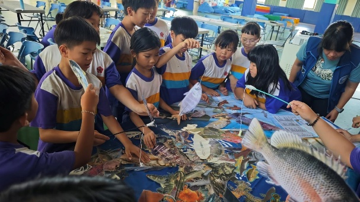
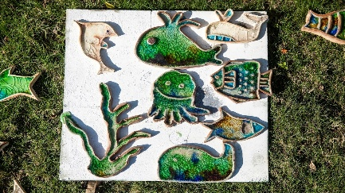
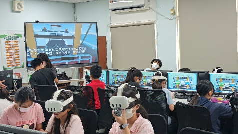
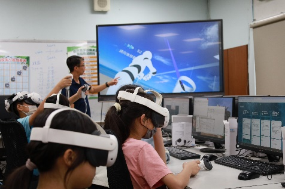

鱻魚遊學

學生實地踏訪在地魚塭，拜訪青農、認識養殖漁業現況與產銷方式，並透過料理實作學習挑魚、去刺與烹煮虱目魚，體會「從食魚到識魚」的完整歷程。
學習重點
- 認識臺灣在地漁業養殖區域與海產種類
- 了解養殖漁業供氧與水車運轉的原理
- 三章一Q 標章與聰明吃魚的食材選擇
- 分組實作虱目魚料理，學習挑刺與調味技巧
- 體驗傳統捕魚文化：八字網撒網、扛竹籃、青蛙裝下水
- 製作虱目魚膠原蛋白手工皂，實踐副產品再利用
從食魚、識魚到惜魚，九門課程帶領孩子穿越產地與餐桌、文化與科技、土地與海洋的共生旅程。
《鱻味的藍調時光》串連海洋生態、地方文化與永續精神。從孩子熟悉的餐桌談起，透過踏查魚塭、虱目魚料理實作、虛擬科技探索與創意手作等活動，讓學生在「食魚、識魚、惜魚」的歷程中，慢慢看見海洋的溫柔與漁業的辛勞。

學生實地踏訪在地魚塭，拜訪青農、認識養殖漁業現況與產銷方式，並透過料理實作學習挑魚、去刺與烹煮虱目魚，體會「從食魚到識魚」的完整歷程。

以「從地景出發，連結記憶與漁業文化」為核心，帶領學生踏查台南安南區城西一帶的魚塭、水圳與漁業聚落，並透過耆老訪談、家長參與及數位紀錄，重新認識家鄉的海洋文化與產業脈絡。

結合自然科學、環境教育與 STEAM 實作，引導學生認識水產養殖與植物栽培的互利關係，理解循環經濟與永續農法的應用，並動手設計與組裝簡易魚菜共生模型。

透過自製互動網頁與九宮格遊戲，讓學生認識虱目魚的各個部位名稱、用途與營養價值，進而思考如何在料理過程中達到「全魚不浪費」的實踐。

以「料理記憶 × 家族連結 × 食物教育」為主軸，透過魚鬆製作與御飯糰創作活動，讓學生從親手實作中體會食物的來歷與情感連結。

建立學生對「永續海鮮」的認知與實踐能力，透過遊戲式學習與真實選購情境模擬，引導學生辨識在地、當季、友善漁法的海鮮品項。

以「洋流與魚類分布」為教學起點，引導學生認識台灣周邊海域的洋流如何影響魚類遷徙與漁場分布，進入創作階段後以陶土為媒材進行藝術設計與製作。

透過 VR 沉浸體驗理解過度捕撈對海洋生態的破壞與危機，採 POE 教學模式（Predict-Observe-Explain），引導學生預測、觀察、解釋並設計友善海洋行動方案。

運用元宇宙平台進行海洋虛擬教室學習，學生以台南沿海常見魚種為主題進行 3D 模型製作，並透過 Ewova 平台與山區學校跨校共學。